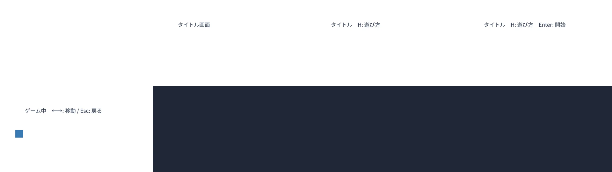
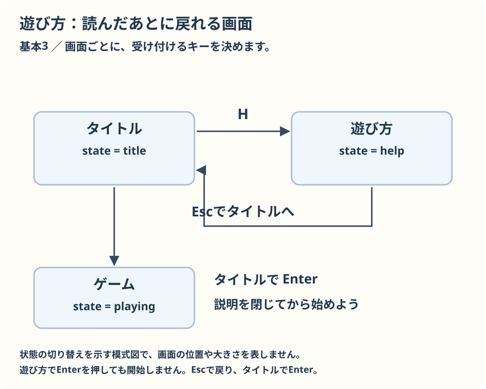

遊び方画面を作る
始める前に
ZIPを展開してできたフォルダーでindex.htmlを開きます。ZIPにはひな型の3ファイルが入っています。
WindowsでZIPを展開する（動画）
変更前を探し、変更後に置き換えて保存し、index.html を開き直します。
ステップ 1：タイトル画面を表示する
このステップの見本を図で見る
state = "title"
最初の画面を決める。
state === "title" → fillText
(130,140)にタイトルを描く。
ゲーム画面とコードの前後を見る

このステップの見本
この行を足す前 変わったコードの一例（script.js）
if (state === "title") ctx.fillText("タイトル画面", 130, 140);
見本で確かめること
タイトル画面が表示されます。
目標
タイトル画面を表示する。
小さな作業
上から順に作業します。目印を探し、その下のコードを書きます。
画面の状態を覚える
作業用の script.js の先頭近くで、次の目印のすぐ下に追加します。
目印
const ctx = canvas.getContext("2d");追加するコード
let state;let は後で値を変えられる変数を作ります。state は今の画面を覚えます。
タイトルから始める
start() から update() の閉じ波括弧までで、次の範囲を置き換えます。
置き換える範囲
function start() {
}
function update() {
}置き換えるコード
function start() {
state = "title";
}
function update() {
}= は右の値を左の変数に入れる代入です。開始時の状態を title にします。
タイトルを表示する
draw() の画面を消す行の下で、次の目印のすぐ下に追加します。
目印
ctx.clearRect(0, 0, canvas.width, canvas.height);追加するコード
ctx.fillStyle = "#26334a"; ctx.font = "28px sans-serif";
if (state === "title") ctx.fillText("タイトル画面", 130, 140);色と文字の大きさを決めます。if は条件が成り立つときだけ実行し、=== は左右が同じかを調べます。描画位置は左上を原点として横 130、縦 140 です。
遊び方の表示を用意する
タイトルの表示の下で、次の目印のすぐ下に追加します。
目印
if (state === "title") ctx.fillText("タイトル画面", 130, 140);追加するコード
else if (state === "help") { ctx.fillText("遊び方: 左右キーで動く", 130, 140); ctx.fillText("Esc: タイトルへ戻る", 130, 200); }else if は前の条件が違うときに次の条件を調べます。help のときは遊び方と戻り方を描きます。切り替える操作は次のステップで作ります。
ゲーム画面の表示を用意する
遊び方を表示する行から gameLoop() の先頭行までで、次の範囲を置き換えます。
置き換える範囲
else if (state === "help") { ctx.fillText("遊び方: 左右キーで動く", 130, 140); ctx.fillText("Esc: タイトルへ戻る", 130, 200); }
}
function gameLoop() {置き換えるコード
else if (state === "help") { ctx.fillText("遊び方: 左右キーで動く", 130, 140); ctx.fillText("Esc: タイトルへ戻る", 130, 200); }
else ctx.fillText("ゲーム中", 130, 140);
}
function gameLoop() {それ以外の状態では「ゲーム中」と表示します。ゲームへ進む操作は後で作ります。
保存して作業用の index.html を再読み込みし、「タイトル画面」が表示されることを確かめます。遊び方への切り替えは次に作ります。
保存後の確認
保存してゲーム画面を更新する（動画）
index.html を再読み込みします。タイトル画面が表示されます。 この段階の見本を開く
小さな練習
タイトルの文を変えます。 練習後はコードを元に戻してください。
ステップ 2：遊び方を開いて戻る
このステップの見本を図で見る
title かつ H → help
左右キーの説明を表示。
Escape → title
タイトル画面に戻る。
ゲーム画面とコードの前後を見る
このステップの見本
if (state === "title") ctx.fillText("タイトル画面", 130, 140);
変わったコードの一例（script.js）if (state === "title") ctx.fillText("タイトル H: 遊び方", 130, 140);
見本で確かめること
Hで遊び方、Escでタイトルに戻ります。
目標
遊び方を開いて戻る。
小さな作業
上から順に作業します。目印を探し、その下のコードを書きます。
遊び方を開くキーを案内する
draw() のタイトル表示で、次の範囲を置き換えます。
置き換える範囲
if (state === "title") ctx.fillText("タイトル画面", 130, 140);置き換えるコード
if (state === "title") ctx.fillText("タイトル H: 遊び方", 130, 140);タイトル画面に H で遊び方を開く案内を表示します。
キー入力を受け取る
draw() の閉じ波括弧から gameLoop() の先頭行までで、次の範囲を置き換えます。
置き換える範囲
}
function gameLoop() {置き換えるコード
}
window.addEventListener("keydown", event => {
if (event.repeat) return;
const key = event.key.toLowerCase();
if (key === "r") { start(); return; }
});
function gameLoop() {keydown はキーを押したときに起きます。押し続けた繰り返しを除き、toLowerCase() でキーを小文字にします。R なら start() でタイトルに戻ります。
Hで遊び方を開く
キー入力処理の R の判定の下で、次の目印のすぐ下に追加します。
目印
if (key === "r") { start(); return; }追加するコード
if (state === "title" && key === "h") state = "help";&& は両方の条件が必要という意味です。タイトル画面で H を押したとき、状態を help に変えます。
Escでタイトルに戻る
H の判定の下で、次の目印のすぐ下に追加します。
目印
if (state === "title" && key === "h") state = "help";追加するコード
else if (key === "escape") { state = "title"; }Esc を押したら state を title にします。キーを小文字にしているので escape と比べます。
保存して再読み込みし、H で遊び方を開き、Esc でタイトルに戻ることを確かめます。
保存後の確認
Hで遊び方、Escでタイトルに戻ります。 この段階の見本を開く
小さな練習
遊び方の文を自分の操作に変えます。 練習後はコードを元に戻してください。
ステップ 3：ゲームへ進む
このステップの見本を図で見る
このステップの見本
if (state === "title") ctx.fillText("タイトル H: 遊び方", 130, 140);
変わったコードの一例（script.js）if (state === "title") ctx.fillText("タイトル H: 遊び方 Enter: 開始", 130, 140);
見本で確かめること
Enterでゲーム中へ進み、Escで戻ります。
目標
ゲームへ進む。
小さな作業
上から順に作業します。目印を探し、その下のコードを書きます。
ゲームの位置と入力を覚える
変数の宣言で、次の範囲を置き換えます。
置き換える範囲
let state;置き換えるコード
let state, gameX, keys;gameX は四角の横位置、keys は押しているキーを記録します。
ゲーム開始の状態を作る
変数の行の下で、次の目印のすぐ下に追加します。
目印
let state, gameX, keys;追加するコード
function startGame() { state = "playing"; gameX = 100; keys = {}; }startGame() はゲーム画面に切り替え、横位置を 100、キーの記録を空にします。
左右移動を用意する
startGame() の下で、次の目印のすぐ下に追加します。
目印
function startGame() { state = "playing"; gameX = 100; keys = {}; }追加するコード
function updateGame() {
gameX += (keys.ArrowRight ? 3 : 0) - (keys.ArrowLeft ? 3 : 0);
gameX = Math.max(20, Math.min(780, gameX));
}条件 ? A : B は条件が正しければ A、違えば B を選びます。右キーなら 3 を足し、左キーなら 3 を引きます。+= は今の値に右側を足します。Math.min と Math.max で横位置を 20 から 780 に収めます。
ゲーム画面を描く
updateGame() の後で、次の目印のすぐ下に追加します。
目印
function updateGame() {
gameX += (keys.ArrowRight ? 3 : 0) - (keys.ArrowLeft ? 3 : 0);
gameX = Math.max(20, Math.min(780, gameX));
}追加するコード
function drawGame() {
ctx.fillStyle = "#26334a"; ctx.font = "28px sans-serif";
ctx.fillText("ゲーム中 ←→: 移動 / Esc: 戻る", 130, 140);
ctx.fillStyle = "#397ab4"; ctx.fillRect(gameX - 20, 230, 40, 40);
}文字と青い四角を描きます。四角の左端を gameX - 20 にするので、幅 40 の中央が gameX です。
最初の位置と入力をそろえる
start() の中で、次の範囲を置き換えます。
置き換える範囲
state = "title";置き換えるコード
state = "title"; gameX = 100; keys = {};タイトルに戻るときに四角の位置とキーの記録も初期化します。
ゲーム中の位置を更新する
update() の中で、次の範囲を置き換えます。
置き換える範囲
function update() {
}置き換えるコード
function update() {
if (state === "playing") updateGame();
}ゲーム中だけ updateGame() を呼び、位置を更新します。
ゲーム画面を表示する
draw() の最後の分岐で、次の範囲を置き換えます。
置き換える範囲
else ctx.fillText("ゲーム中", 130, 140);置き換えるコード
else drawGame();ゲーム画面では drawGame() を呼びます。
開始キーを案内する
draw() のタイトル表示で、次の範囲を置き換えます。
置き換える範囲
if (state === "title") ctx.fillText("タイトル H: 遊び方", 130, 140);置き換えるコード
if (state === "title") ctx.fillText("タイトル H: 遊び方 Enter: 開始", 130, 140);タイトルに Enter で開始する案内を加えます。
戻るときに入力を解除する
Esc キーの判定で、次の範囲を置き換えます。
置き換える範囲
else if (key === "escape") { state = "title"; }置き換えるコード
else if (key === "escape") { state = "title"; keys = {}; }タイトルに戻るとき、左右キーが押されたまま残らないよう記録を空にします。
Enterでゲームを開始する
Esc の判定の下で、次の目印のすぐ下に追加します。
目印
else if (key === "escape") { state = "title"; keys = {}; }追加するコード
else if (state === "title" && key === "enter") startGame();タイトル画面で Enter を押すと startGame() でゲームを始めます。
左右キーを押したことを記録する
Enter の判定の下で、次の目印のすぐ下に追加します。
目印
else if (state === "title" && key === "enter") startGame();追加するコード
else if (state === "playing" && (event.key === "ArrowLeft" || event.key === "ArrowRight")) { event.preventDefault(); keys[event.key] = true; }|| はどちらか一方が成り立つという意味です。ゲーム中に左右キーを押すと keys に true を記録し、ページのスクロールを防ぎます。
左右キーを離したことを記録する
keydown の処理の後で、次の目印のすぐ下に追加します。
目印
else if (state === "playing" && (event.key === "ArrowLeft" || event.key === "ArrowRight")) { event.preventDefault(); keys[event.key] = true; }
});追加するコード
window.addEventListener("keyup", event => { if (event.key === "ArrowLeft" || event.key === "ArrowRight") keys[event.key] = false; });keyup はキーを離したときに起きます。左右キーの記録を false に戻します。
画面から離れたときも入力を解除する
keyup の処理の下で、次の目印のすぐ下に追加します。
目印
window.addEventListener("keyup", event => { if (event.key === "ArrowLeft" || event.key === "ArrowRight") keys[event.key] = false; });追加するコード
window.addEventListener("blur", () => { keys = {}; });別の画面へ移るときにキーの記録を空にします。

タイトルでHを押すと遊び方が開きます。読み終えたらEscでタイトルに戻りましょう。ゲームを始めるEnterは、タイトルで受け付けます。
状態遷移の模式図。helpではEnterで開始しない実コードに対応。 デモ追加後もtitle/help/playingとH/Esc/Enterの条件は一致。
保存して再読み込みし、Enter でゲームを始め、左右キーで四角を動かし、Esc でタイトルに戻ることを確かめます。
保存後の確認
Enterでゲーム中へ進み、Escで戻ります。 この段階の見本を開く
小さな練習
開始キーを変えてみます。 練習後はコードを元に戻してください。
自分のゲームに組み込むには
stateと遊び方の描画、HとEscの切り替えを自作ゲームへ移します。
EnterでstartGameを呼び、updateGameとdrawGameを自分のゲームの更新と描画に置き換えます。
この欄のstartGame・updateGame・drawGameは、自分のゲーム側の開始・更新・描画の関数名の例です。自分の関数名に合わせて読み替えます。gameLoopは増やさず、既存のstart・update・drawから必要な処理を呼び、再挑戦では持ち込んだ状態や入力も初期化します。